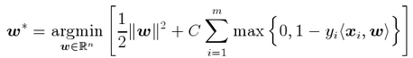
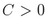
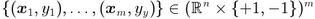
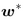
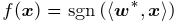
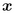
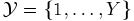
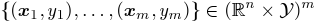
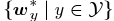
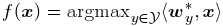

LIBOCAS - Library implementing OCAS solver
for training linear SVM
classifiers from large-scale data
Vojtech Franc,
Soeren
Sonnenburg
Last Modified: 11-Jun-2010
Introduction
The library implements Optimized Cutting Plane Algorithm (OCAS)
for training linear SVM classifiers from large-scale data.
The computational effort of OCAS scales with O(m log m) where m is the sample size.
In an extensive empirical evaluation OCAS significantly outperforms current
state of the art SVM solvers, like SVM^light, SVM^perf and BMRM, achieving
speedups of over 1,000 on some datasets over SVM^light and 20 over SVM^perf,
while obtaining the same precise Support Vector solution. OCAS even in the early
optimization steps shows often faster convergence than the so far in this domain
prevailing approximative methods SGD and Pegasos. Effectively parallelizing
OCAS we were able to train on a dataset of size 15 million examples
(itself about 32GB in size) in just 671 seconds --- a competing string kernel SVM
required 97,484 seconds to train on 10 million examples sub-sampled from this
dataset.
 The library also implements COFFIN framework for
efficient training of translation invariant image classifiers from virtual
examples. As an example, we used the implemented framework to train a linear SVM
on a gender classification dataset of almost 5 million images on a plain
notebook with just 4GB of memory.
The library also implements COFFIN framework for
efficient training of translation invariant image classifiers from virtual
examples. As an example, we used the implemented framework to train a linear SVM
on a gender classification dataset of almost 5 million images on a plain
notebook with just 4GB of memory.
Features
- SVM solvers for training linear classifiers from large scale-data.
- Binary (two-class) and genuine multi-class SVM formulations.
- Optimized code written in C.
- A stand alone application and MEX interface for Matlab.
- Reads examples from SVM^light format.
- Optimized for both sparse and dense features.
- Parallelized version of the binary solver.
- Allows using different C for each training example (Matlab's interace to binary solver).
- Tools for classification.
- Training translation invariant image classifiers from virtual examples.
- Functions for computing image features based on Local Binary Patterns (LBP).
Problem formulation
OCAS solver is currently implemented for training binary (two-class) and multi-class
SVM classifiers:
1. Binary classification problem: OCAS solves the following unconstrained convex optimization task

where  is the regularization constant and
 are training examples. The result is
the parameter vector  of the linear rule

which assigns vector  a class label +1 and/or -1.
2. Multi-class classification probem: OCAS solves the following unconstrained convex optimization task
where is the regularization constant,
 is a finite set of labels and
 are training
examples. The result is a set of parameter vectors  of the linear rule

which assigns vector a class label
from .
Download
LIBOCAS can be downloaded from here:
Platforms
GNU/Linux.
Licensing Information
LIBOCAS is licensed under the GPL version 3.
References
- S. Sonnenburg, V. Franc. COFFIN: A Computational Framework for Linear SVMs.
In Proceedings of ICML. Haifa, 2010.
[pdf]
- V. Franc, S. Sonnenburg. Optimized Cutting Plane Algorithm for Large-Scale
Risk Minimization. The Journal of Machine Learning Research (JMLR),
vol. 10, pp. 2157--2192. October 2009. [pdf]
- V. Franc, S. Sonnenburg. OCAS optimized cutting plane algorithm for Support Vector
Machines. In Proceedings of ICML. Helsinki, 2008.
[pdf]